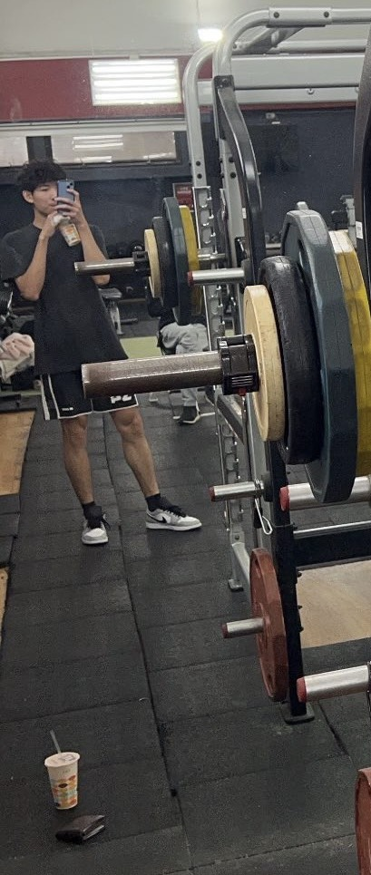
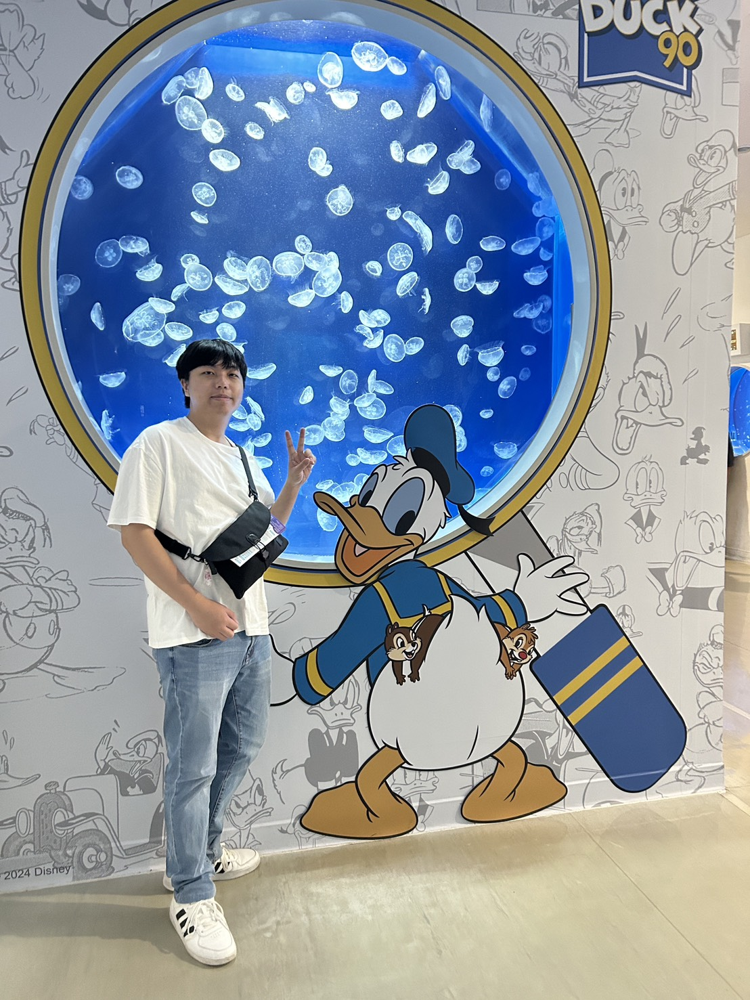
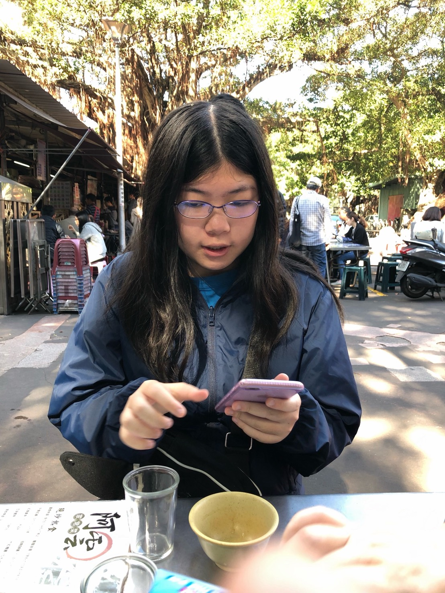

🏢 公司簡介
凌群電腦成立於 1975 年，為台灣知名的資訊服務公司之一（股票代碼：2453）。 公司主要業務涵蓋 系統整合、雲端運算、人工智慧、大數據分析、物聯網應用 等領域， 致力於協助政府與企業完成數位轉型與智慧應用發展。
凌群電腦以「以科技驅動創新、以服務成就價值」為理念， 在資訊服務產業深耕多年，擁有完善的研發能量與專業團隊， 並在台灣、日本、美國及東南亞地區設有據點。
⚙️ 核心能力
- 系統整合與顧問服務
- 雲端運算與資安架構
- 人工智慧與大數據分析
- 企業流程自動化（RPA）
- 智慧城市與 IoT 應用
🌟 願景與使命
成為亞太區最具影響力的 智慧科技與資訊服務品牌。
以創新技術與專業服務，協助企業實現永續發展與智慧轉型。
📫 聯絡我們
🌍 https://www.syscom.com.tw/
☎ 電話：02-2191-6066
📍 地址：台北市萬華區峨眉街 115 號 6 樓
💌 Email：service@syscom.com.tw
成員

1111706-簡亞軒

1111745–王哲彥

1111750–葉明蓁
公司位置

地圖位置

峨嵋街

成都路
智慧城市展


AIoT展